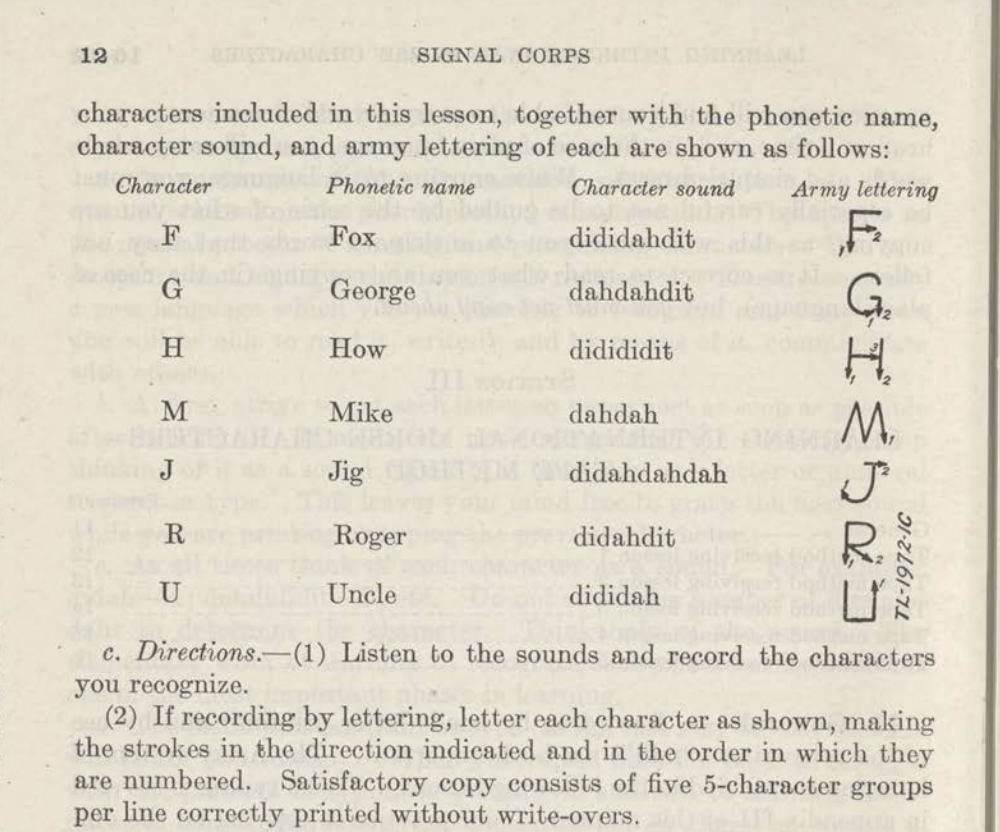

01닿다
오는 것부터, 의미 있게.
센터에 닿는 순간이 하나의 기록이 됩니다.
작은 출석을 놓치지 않는 것부터 시작합니다.
EVERY TRY CONNECTS
센터에 닿는 작은 순간부터.
나의 기록이 쌓이고, 함께할 이유가 생기는 곳.
디디다는 꾸준함이 성장으로 이어지게 합니다.
회원과 센터를 잇는 피트니스 멤버십 도구
나를 위한 오늘의 한 걸음
오늘의 출석을 더해 볼까요?
체험용 데이터입니다. 실제 출석은 기록되지 않아요.
01 / THE EXPERIENCE
몇 명이 등록했는지를 넘어,
누가 계속하고 있고 어떻게 성장하는지.
디디다는 그다음의 경험을 연결합니다.
센터에 닿는 순간이 하나의 기록이 됩니다.
작은 출석을 놓치지 않는 것부터 시작합니다.
나의 출석과 활동을 한눈에 돌아봅니다.
남과의 비교 대신, 나만의 변화를 발견합니다.
회원의 기록은 코치와 센터의 관심으로.
서로를 이해하는 경험이 다음 방문을 만듭니다.
디디다가 만들어 가는 서비스 경험입니다. 아래 데모에서 현재 구상한 화면을 살펴보세요.
02 / TWO SIDES, ONE CONNECTION
오늘의 출석, 지나온 수업, 작은 성취까지.
흩어져 있던 나의 운동 일상을
하나의 흐름으로 돌아보세요.
지우님의 수영 기록
오늘도 한 걸음 쌓았어요.
자유형 · 기초 수영
물속에서 더 편안해진 하루.
호흡과 균형 연습
내 속도에 맞춰, 꾸준히.
자유형 · 기초 수영
“편안한 호흡을 찾고 있어요.
지금의 리듬을 함께 이어가 봐요.”코치 피드백 예시
방문이 뜸해진 회원, 곧 만료되는 이용권.
흩어진 운영 정보를 함께 보며
필요한 관심을 더 정확하게 전하세요.
기록이 쌓일수록, 회원을 더 잘 이해할 수 있도록.

di · di · dah두 점과 하나의 선. 그 안에 담긴 당신.
03 / FROM MORSE TO YOU
멀리 떨어진 사람에게 말을 전하던 모스 부호.
두 번의 짧은 신호와 한 번의 긴 신호, ··−는
알파벳 U입니다. 소리로 읽으면 di-di-dah.
디디다는 이 U를 당신, YOU로 읽습니다.
신호 너머에 늘 누군가가 있었듯,
출석 기록 너머에도 한 사람의 이야기가 있으니까요.
센터로 향하는 두 걸음, 도착을 알리는 한 번의 닿음.
그 작은 신호를 알아보고, 쌓아 온 시간을 기억하며,
다음 걸음을 함께하는 것. 디디다가 연결하는 일입니다.

A SIGNAL WITH A HISTORY
19세기 전신의 시대부터 모스 부호는 짧고 긴 신호로 말을 전했습니다. 이 통신 교육자료에도 U의 소리는 ‘dididah’로 적혀 있습니다. 우리가 지은 이름 안에는, 이미 누군가에게 닿기 위해 쓰이던 리듬이 있습니다.
한때 거리를 건너 말을 전하던 신호.
이제 디디다는 그 리듬으로 당신의 어제와 오늘,
그리고 함께할 사람들을 잇고자 합니다.
04 / BUILT FROM REAL DAYS
수영장을 운영하며 만난 실제 질문들.
디디다는 그 질문을 하나씩 풀어 가며
회원과 센터의 다음을 준비하고 있습니다.
서울 PAB 수영장의 환불·반 변경·양도 계산 도구.
반복되는 업무를 정리하는 일에서 출발했습니다.
회원과 운영자 화면을 샘플 데이터로 체험할 수 있습니다.
새로운 멤버십 경험을 구체적인 화면으로 제안합니다.
출석, 회원 명부, 만료 관리와 정책 계산 도구까지.
첫 외부 센터에 적용할 버전을 준비하고 있습니다.
A FEW THINGS TO KNOW
현재 홈페이지에서 회원·운영자 데모를 살펴볼 수 있으며, 외부 센터 적용 버전을 준비 중입니다. 실제 도입 범위와 일정은 센터의 운영 방식에 맞춰 문의를 통해 안내드립니다.
수영장 운영 경험에서 출발했지만, 회원의 꾸준한 참여와 성장을 중요하게 생각하는 피트니스 센터를 위한 도구를 지향합니다. 종목과 수업 방식에 따른 적용 가능성을 함께 확인합니다.
홈페이지의 태그 버튼은 출석 경험을 보여 주는 체험입니다. 실제 출석 방식과 NFC 리더기 등 장비 연동 여부는 센터의 기존 장비와 운영 환경을 확인한 뒤 협의합니다.
아니요. 홈페이지와 데모의 이름, 출석 횟수, 피드백, 운영 수치는 이해를 돕기 위한 예시입니다. 홈페이지의 체험 버튼은 실제 출석이나 회원 정보를 저장하지 않습니다.
LET’S MAKE THE NEXT CONNECTION
어떤 센터인지, 어떤 고민이 있는지.
당신의 일상부터 들려주세요.